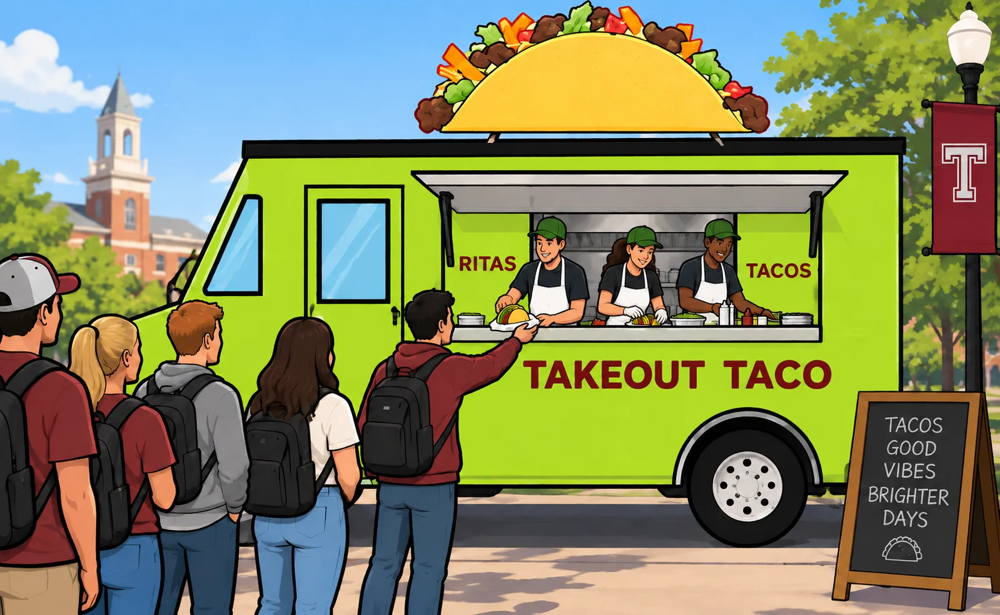
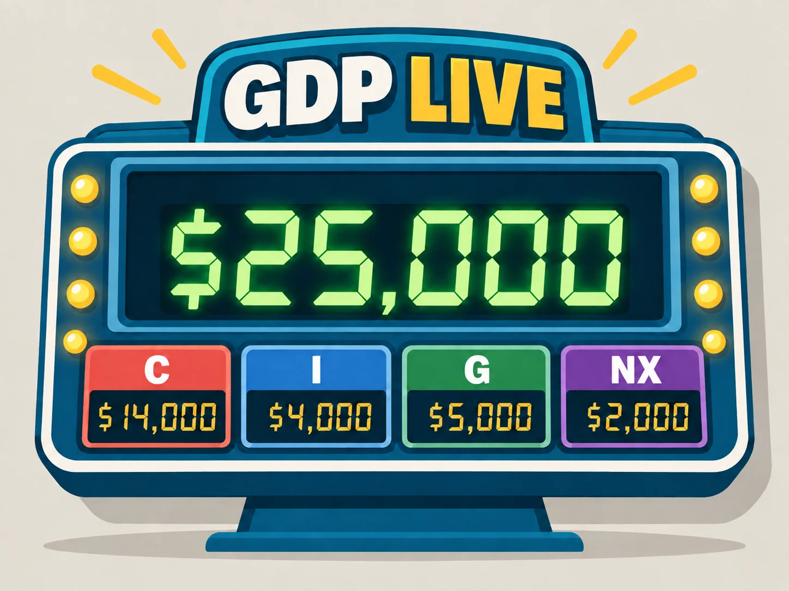
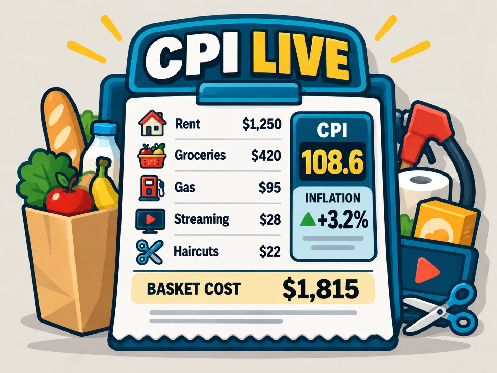
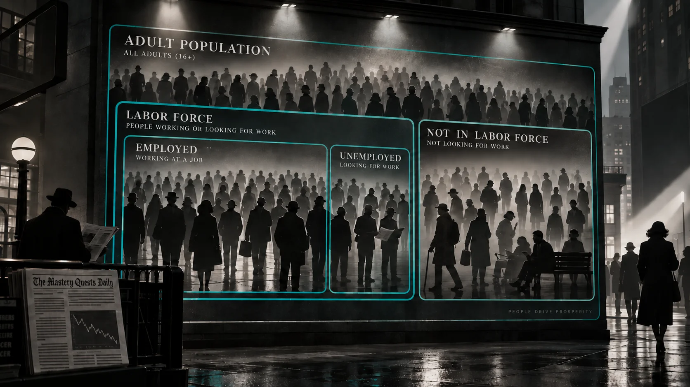
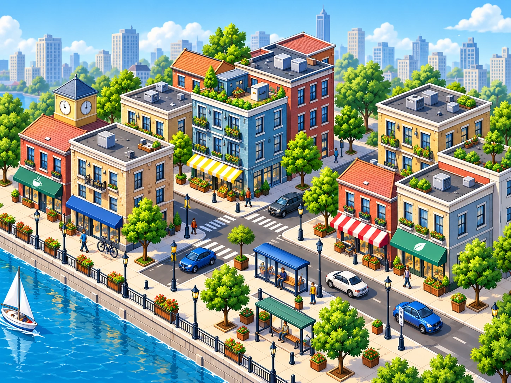
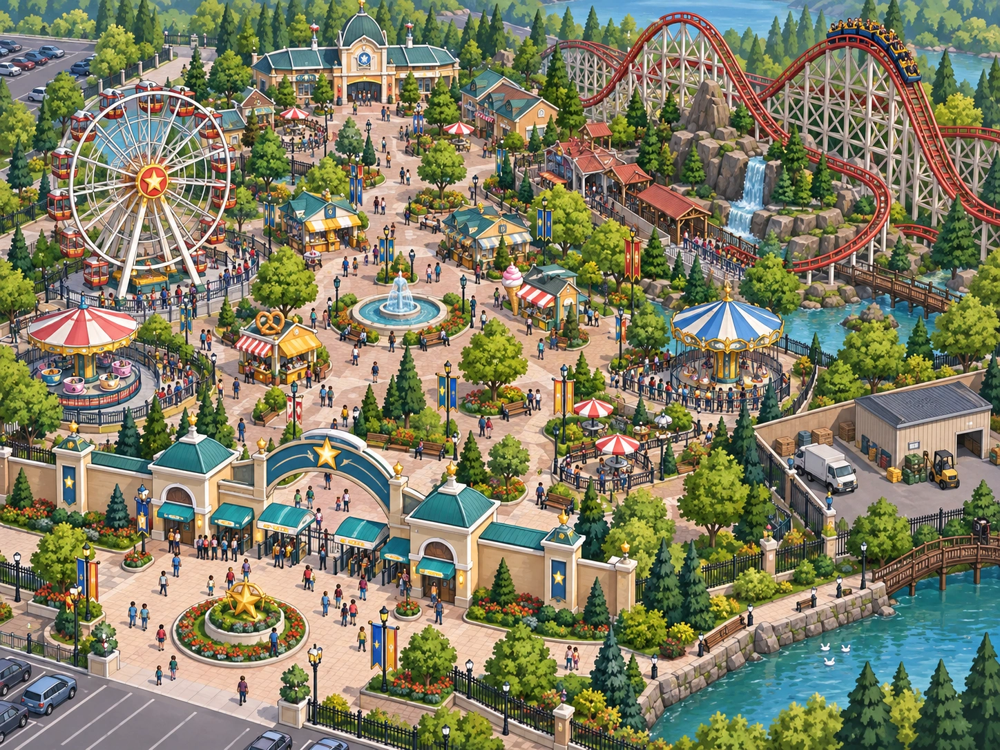
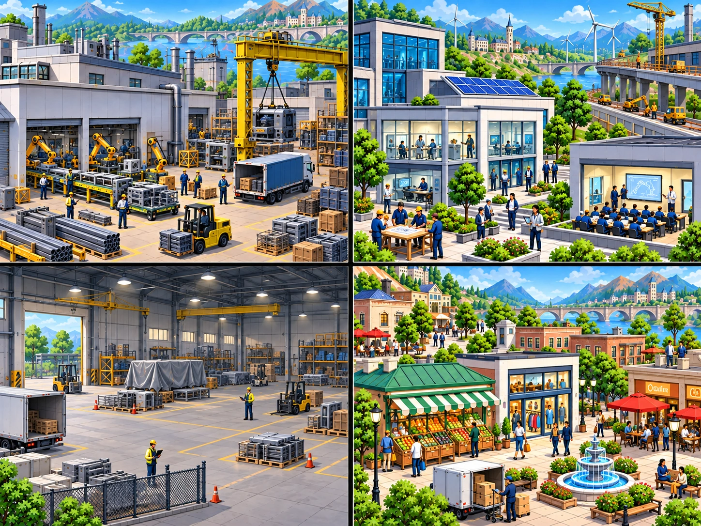
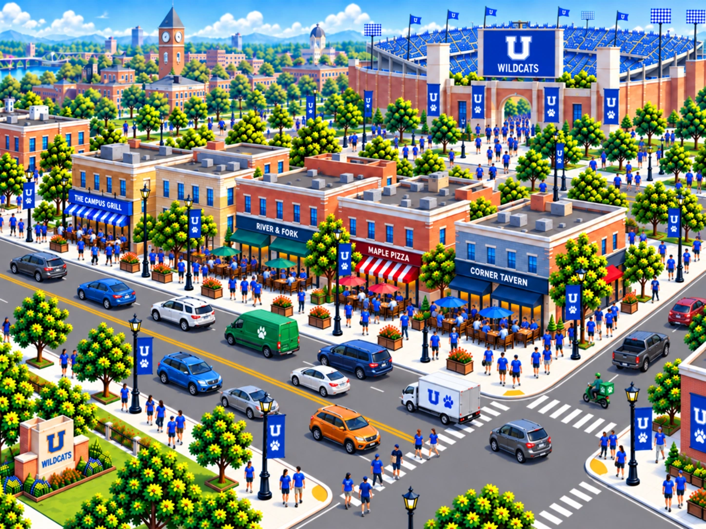

Takeout Taco: Lunch Rush
Manage a food-truck crew and trace how specialization, marginal product, and diminishing returns change as workers share fixed equipment.
PLAY GAMEExplore economic decisions through short simulations, strategy games, and accounting challenges.

Manage a food-truck crew and trace how specialization, marginal product, and diminishing returns change as workers share fixed equipment.
PLAY GAME
Post economic activity to a live GDP counter, audit bad entries, and build the expenditure approach to national accounting.
PLAY GAME
Reprice a fixed household basket and investigate the price level and inflation.
PLAY GAME

Inherit a binding rent ceiling. Manage shortages, maintenance, future housing supply, and the tradeoffs for current tenants and newcomers.
PLAY GAME
Set admission and investment policies for an amusement park. Balance earnings, access, guest experience, and limited ride capacity.
PLAY GAME
Allocate scarce resources between household goods and capital. Respond to disruption and distinguish recovery from growth in productive capacity.
PLAY GAMEManage concert ticket prices and tour supply as audience demand changes. Follow shortages, surpluses, revenue, and fan access.
PLAY GAME
Choose delivery promotions across six home games. Compare profits and market shares as a rival responds to your past decisions.
PLAY GAME